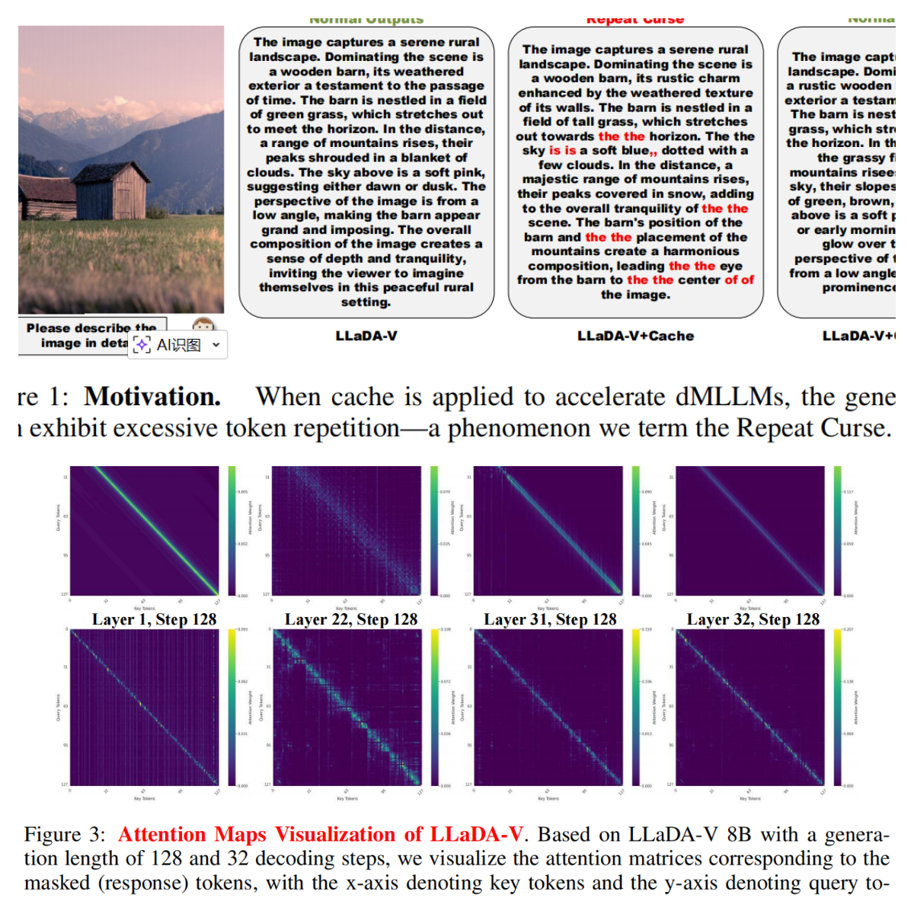
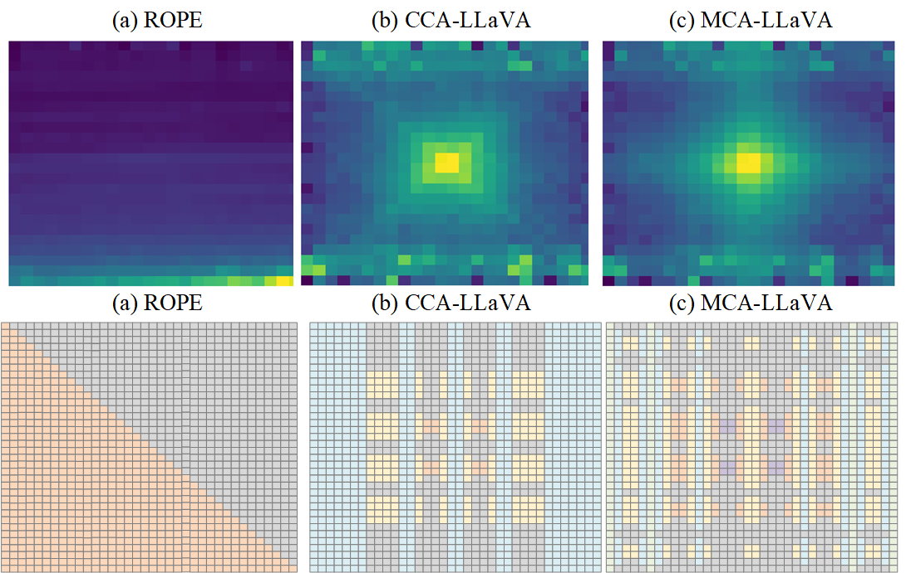
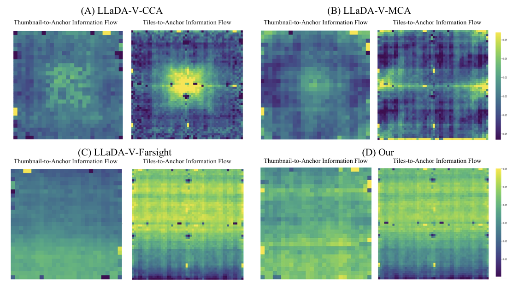
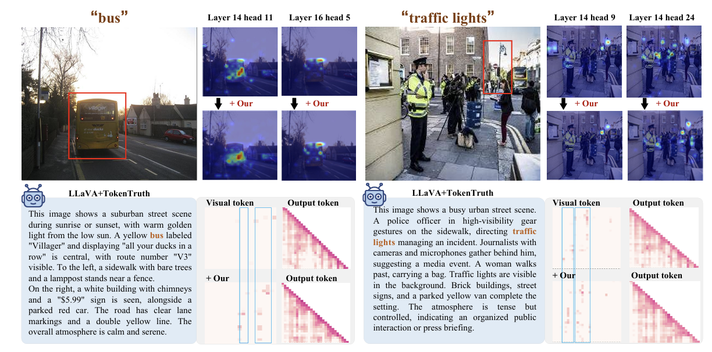
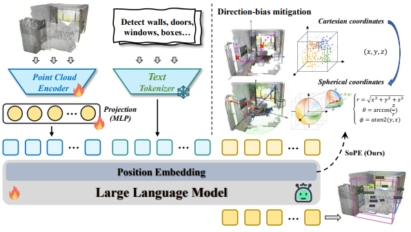
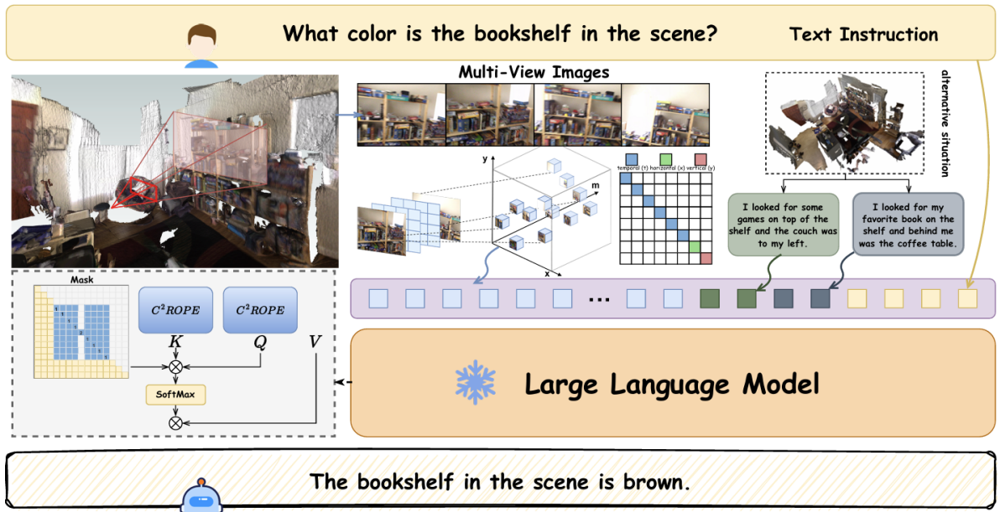
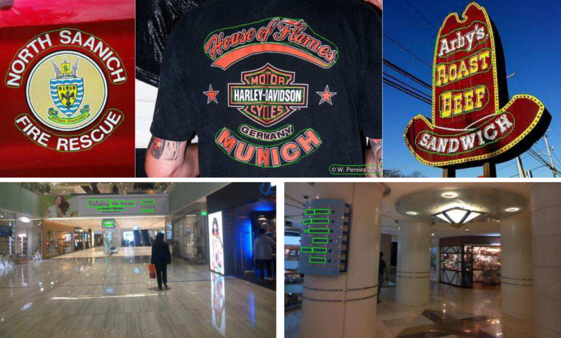

Qiyan Zhao
Institute of Automation, Chinese Academy of Sciences
About Me
I am a Ph.D. student at the Institute of Automation, Chinese Academy of Sciences (advised by Prof. Xu-Yao Zhang), focusing on explainable AI and multimodal reasoning. Previously, I was a research intern at Shanghai Jiao Tong University, where I had the privilege of collaborating with and learning from Xiaofeng Zhang. Additionally, I collaborated closely with Dr. Koon-Ting Yip at University of Macau.
My current interests lie in Embodied Agents and Memory. Please feel free to reach out if you are interested in related topics.
News
- 2026.4 — We have 2 papers accepted to ACL 2026.
- 2026.2 — We have 1 paper accepted to CVPR 2026.
- 2026.1 — We have 1 paper accepted to ICRA 2026.
- 2026.1 — We have 2 paper including 1 oral accepted to ICLR 2026.
- 2025.10 — We have 1 paper accepted to ACM MM 2025.
- 2025.9 — We have 1 paper accepted to The Visual Computer.
- 2025.6 — We have 1 paper accepted to IJCNN 2025.
Publications




Fixing Semantic Blind Spots in Anchor Tokens of dMLLMs
ACL 2026 Findings
[Paper]

TokenPenalty: Alleviating Attention Sinks and Positional Decay in LVLMs
ACL 2026 Findings
[Paper]

SoPE: Spherical Coordinate-Based Positional Embedding for Enhancing Spatial Perception of 3D LVLMs
CVPR 2026
[Paper]


Few-shot cross-modal text detection via CLIP
The Visual Computer [JCR 2, CCF C]
[Code]
Services
- Invited Reviewer for: ICML, NeurIPS, CVPR, ICLR, ACM MM, ECCV